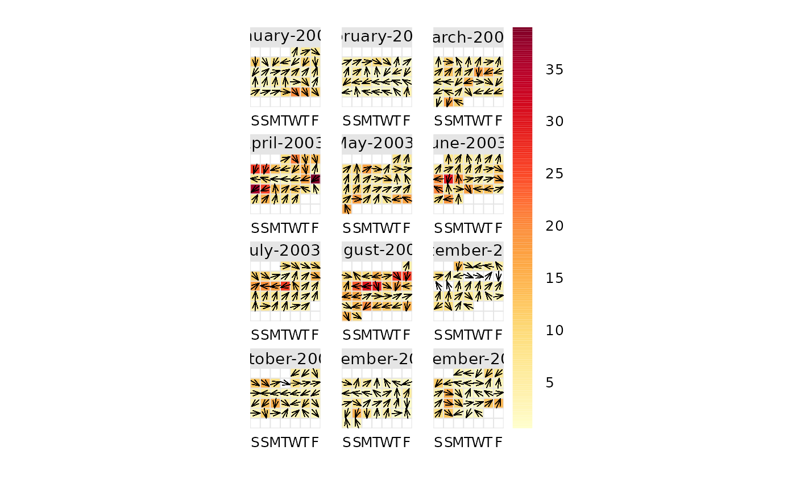

This function will plot data by month laid out in a conventional calendar format. The main purpose is to help rapidly visualise potentially complex data in a familiar way. Users can also choose to show daily mean wind vectors if wind speed and direction are available.
Usage
calendarPlot(
mydata,
pollutant = "nox",
year = 2003,
month = 1:12,
type = "default",
annotate = "date",
statistic = "mean",
cols = "heat",
limits = c(0, 100),
lim = NULL,
col.lim = c("grey30", "black"),
col.arrow = "black",
font.lim = c(1, 2),
cex.lim = c(0.6, 1),
digits = 0,
data.thresh = 0,
labels = NA,
breaks = NA,
w.shift = 0,
w.abbr.len = 1,
remove.empty = TRUE,
main = NULL,
key.header = "",
key.footer = "",
key.position = "right",
key = TRUE,
auto.text = TRUE,
plot = TRUE,
...
)Arguments
- mydata
A data frame minimally containing
dateand at least one other numeric variable. The date should be in eitherDateformat or classPOSIXct.- pollutant
Mandatory. A pollutant name corresponding to a variable in a data frame should be supplied e.g.
pollutant = "nox".- year
Year to plot e.g.
year = 2003. If not supplied all data potentially spanning several years will be plotted.- month
If only certain month are required. By default the function will plot an entire year even if months are missing. To only plot certain months use the
monthoption where month is a numeric 1:12 e.g.month = c(1, 12)to only plot January and December.- type
Not yet implemented.
- annotate
This option controls what appears on each day of the calendar. Can be: "date" --- shows day of the month; "wd" --- shows vector-averaged wind direction, or "ws" --- shows vector-averaged wind direction scaled by wind speed. Finally it can be “value” which shows the daily mean value.
- statistic
Statistic passed to
timeAverage(). Note that ifstatistic = "max"andannotateis "ws" or "wd", the hour corresponding to the maximum concentration ofpolluantis used to provide the associatedwsorwdand not the maximum dailywsorwd.- cols
Colours to be used for plotting. See
openColours()for more details.- limits
Use this option to manually set the colour scale limits. This is useful in the case when there is a need for two or more plots and a consistent scale is needed on each. Set the limits to cover the maximum range of the data for all plots of interest. For example, if one plot had data covering 0--60 and another 0--100, then set
limits = c(0, 100). Note that data will be ignored if outside the limits range.- lim
A threshold value to help differentiate values above and below
lim. It is used whenannotate = "value". See next few options for control over the labels used.- col.lim
For the annotation of concentration labels on each day. The first sets the colour of the text below
limand the second sets the colour of the text abovelim.- col.arrow
The colour of the annotated wind direction / wind speed arrows.
- font.lim
For the annotation of concentration labels on each day. The first sets the font of the text below
limand the second sets the font of the text abovelim. Note that font = 1 is normal text and font = 2 is bold text.- cex.lim
For the annotation of concentration labels on each day. The first sets the size of the text below
limand the second sets the size of the text abovelim.- digits
The number of digits used to display concentration values when
annotate = "value".- data.thresh
Data capture threshold passed to
timeAverage(). For example,data.thresh = 75means that at least 75\ available in a day for the value to be calculate, else the data is removed.- labels
If a categorical scale is defined using
breaks, thenlabelscan be used to override the default category labels, e.g.,labels = c("good", "bad", "very bad"). Note there is one less label than break.- breaks
If a categorical scale is required then these breaks will be used. For example,
breaks = c(0, 50, 100, 1000). In this case “good” corresponds to values between 0 and 50 and so on. Users should set the maximum value ofbreaksto exceed the maximum data value to ensure it is within the maximum final range e.g. 100--1000 in this case.- w.shift
Controls the order of the days of the week. By default the plot shows Saturday first (
w.shift = 0). To change this so that it starts on a Monday for example, setw.shift = 2, and so on.- w.abbr.len
The default (
1) abbreviates the days of the week to a single letter (e.g., in English, S/S/M/T/W/T/F).w.abbr.lendefines the number of letters to abbreviate until. For example,w.abbr.len = 3will abbreviate "Monday" to "Mon".- remove.empty
Should months with no data present be removed? Default is
TRUE.- main
The plot title; default is pollutant and year.
- key.header
Adds additional text/labels to the scale key. For example, passing
calendarPlot(mydata, key.header = "header", key.footer = "footer")adds addition text above and below the scale key. These arguments are passed todrawOpenKey()viaquickText(), applying theauto.textargument, to handle formatting.- key.footer
see
key.header.- key.position
Location where the scale key is to plotted. Allowed arguments currently include
"top","right","bottom"and"left".- key
Fine control of the scale key via
drawOpenKey(). SeedrawOpenKey()for further details.- auto.text
Either
TRUE(default) orFALSE. IfTRUEtitles and axis labels will automatically try and format pollutant names and units properly e.g. by subscripting the `2' in NO2.- plot
Should a plot be produced?
FALSEcan be useful when analysing data to extract calendar plot components and plotting them in other ways.- ...
Other graphical parameters are passed onto the
latticefunctionlattice::levelplot(), with common axis and title labelling options (such asxlab,ylab,main) being passed to viaquickText()to handle routine formatting.
Value
an openair object
Details
calendarPlot() will plot data in a conventional calendar format, i.e., by
month and day of the week. Daily statistics are calculated using
timeAverage(), which by default will calculate the daily mean
concentration.
If wind direction is available it is then possible to plot the wind direction
vector on each day. This is very useful for getting a feel for the
meteorological conditions that affect pollutant concentrations. Note that if
hourly or higher time resolution are supplied, then calendarPlot() will
calculate daily averages using timeAverage(), which ensures that wind
directions are vector-averaged.
If wind speed is also available, then setting the option annotate = "ws"
will plot the wind vectors whose length is scaled to the wind speed. Thus
information on the daily mean wind speed and direction are available.
It is also possible to plot categorical scales. This is useful where, for
example, an air quality index defines concentrations as bands, e.g., "good",
"poor". In these cases users must supply labels and corresponding breaks.
Note that is is possible to pre-calculate concentrations in some way before
passing the data to calendarPlot(). For example rollingMean() could be
used to calculate rolling 8-hour mean concentrations. The data can then be
passed to calendarPlot() and statistic = "max" chosen, which will plot
maximum daily 8-hour mean concentrations.
See also
Other time series and trend functions:
TheilSen(),
runRegression(),
smoothTrend(),
timePlot(),
timeProp(),
timeVariation(),
trendLevel()
Examples
# basic plot
calendarPlot(mydata, pollutant = "o3", year = 2003)
# show wind vectors
calendarPlot(mydata, pollutant = "o3", year = 2003, annotate = "wd")

if (FALSE) {
# show wind vectors scaled by wind speed and different colours
calendarPlot(mydata,
pollutant = "o3", year = 2003, annotate = "ws",
cols = "heat"
)
# show only specific months with selectByDate
calendarPlot(selectByDate(mydata, month = c(3, 6, 10), year = 2003),
pollutant = "o3", year = 2003, annotate = "ws", cols = "heat"
)
# categorical scale example
calendarPlot(mydata,
pollutant = "no2", breaks = c(0, 50, 100, 150, 1000),
labels = c("Very low", "Low", "High", "Very High"),
cols = c("lightblue", "green", "yellow", "red"), statistic = "max"
)
# UK daily air quality index
pm10.breaks <- c(0, 17, 34, 50, 59, 67, 75, 84, 92, 100, 1000)
calendarPlot(mydata, "pm10",
year = 1999, breaks = pm10.breaks,
labels = c(1:10), cols = "daqi", statistic = "mean", key.header = "DAQI"
)
}